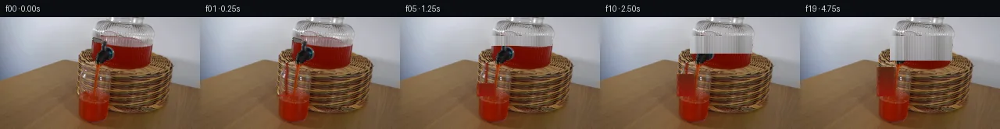

![首帧]()

Round 00
2026-11-05T16:28:11.729608+00:00像素候选变化代码 +247/−0inspection 更新
pixels 8f4fff35307d6870 · code 5b7a632351fa6321
查看本轮 generate.py 真实 diff
--- previous/generate.py +++ current/generate.py @@ -0,0 +1,247 @@ +#!/usr/bin/env python3 +"""generate.py - 20-frame animation: beverage dispenser pouring red liquid into clear glass.""" + +import numpy as np +from PIL import Image +from pathlib import Path +import sys +sys.path.insert(0, str(Path(__file__).parent)) +from artifact_io import save + +CASE_DIR = Path(__file__).parent +H, W = 144, 256 + +# Load base frame +base = np.array(Image.open(CASE_DIR / 'first_frame.png')).astype(np.float64) + +# ============================================================ +# Identify key regions from first_frame.png analysis +# ============================================================ + +# Red liquid in dispenser: pixels where R significantly exceeds G and B +def get_red_mask(arr): + """Strict redness mask for liquid in dispenser.""" + r, g, b = arr[..., 0], arr[..., 1], arr[..., 2] + return (r > g + 15) & (r > b + 20) + +# Background wall region for "empty glass" reference +# The area inside the dispenser above the liquid (y=12-22) shows empty glass +EMPTY_GLASS_Y_START = 12 +EMPTY_GLASS_Y_END = 22 + +# Dispenser body boundaries (approximate) +DISPENSER_LEFT = 115 +DISPENSER_RIGHT = 195 + +# Spout exit location +SPOUT_X = 112 +SPOUT_Y_TOP = 54 +SPOUT_Y_BOT = 58 + +# Clear glass region (where liquid collects) +GLASS_LEFT = 98 +GLASS_RIGHT = 122 +GLASS_BOTTOM = 101 +GLASS_TOP = 62 + +def build_empty_dispenser_buffer(arr): + """Build a buffer showing what the empty dispenser glass looks like at each row. + Uses the area above the liquid (y=12-22) as reference, blending outward.""" + empty = arr.copy() + + # The empty glass area (y=12-23) shows us the dispenser glass with background + # For rows below the liquid, we estimate what the empty glass would look like + # by smoothly extending the empty glass pattern + + # Get the empty glass template for the dispenser region + empty_template = arr[EMPTY_GLASS_Y_START:EMPTY_GLASS_Y_END, DISPENSER_LEFT:DISPENSER_RIGHT, :].copy() + + # Build per-column statistics of the empty glass + # The wall behind the dispenser has a slight horizontal gradient + col_means = empty_template.mean(axis=0) # shape: (width, 3) + + # For each row below the liquid surface, we'll estimate the empty glass + # as the column mean + some noise to match the texture + # The wall gets slightly darker as we go down + return col_means + +def create_empty_glass_region(frame, y_start, y_end, col_means, disp_left=DISPENSER_LEFT): + """Replace liquid area with empty glass appearance.""" + width = col_means.shape[0] + for y in range(y_start, min(y_end, H)): + if y >= frame.shape[0]: + break + for x_idx in range(width): + x = disp_left + x_idx + if 0 <= x < W: + # Slight darkening as we go down + darken = 1.0 - 0.003 * (y - EMPTY_GLASS_Y_END) + pixel = col_means[x_idx] * darken + # Add some noise + noise = np.random.randn(3) * 2 + frame[y, x, :] = np.clip(pixel + noise, 0, 255) + +def draw_pour_stream(frame, stream_y_start, target_y, spout_x=SPOUT_X): + """Draw a red liquid stream from spout to target level.""" + if target_y <= stream_y_start: + return … diff truncated; 160 more lines …